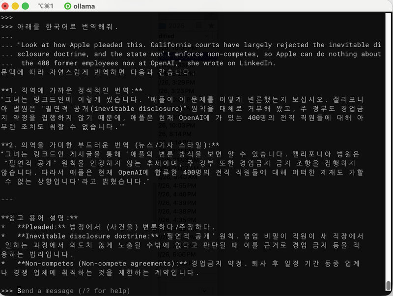
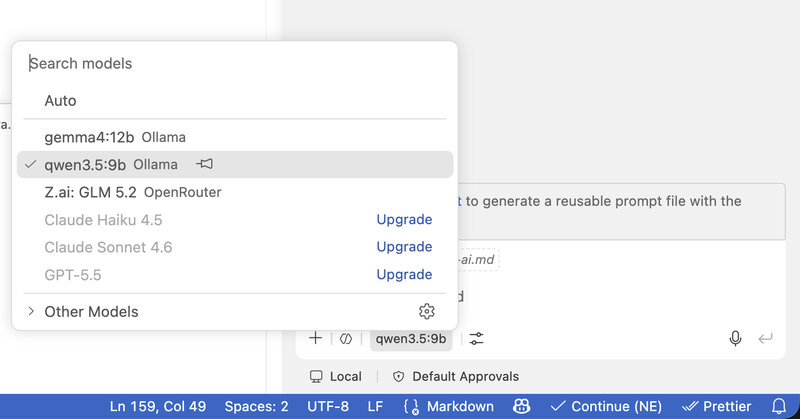

엊그제 Ollama가 새로 6,500만 달러의 투자를 유치하여 지금까지 총 8,800만 달러를 유치했다고 밝혔다. 사용자는 현재 900만 명에 가깝다고 한다.
난 작년에 처음 Ollama를 접했는데 그때는 ChatGPT를 대신할 도구를 찾다가 알게 됐다.
로컬(내 컴퓨터)에서 공개 AI 모델을 실행하는 프로그램
현재 경쟁 도구가 여럿 있지만 진짜 장점은 로컬 AI를 실행해준다는 데만 있지 않다.
-
실행하기 적당한 양자화 모델을 제공한다.
양자화: 직관적으로 이해하자면 고해상도 원본은 "3.14159265"처럼 소수점 아래 긴 숫자인데 저해상도로 반올림하여 "3.14"로 단순화하는 것에 비유할 수 있다. 또는 고해상도 사진의 색상 단계를 줄여 파일 크기를 낮추는 것과 비슷하다. 세밀한 차이는 줄어들 수 있지만 전체적인 형태는 유지된다.
-
GPU 사용과 모델 실행 설정을 상당 부분 자동화한다.
-
API를 제공하여 다른 도구와 연동할 수 있다.
AI 모델을 직접 실행할 때 생기는 번거로운 과정을 하나의 도구에 묶어놓은 것이다. 여기에 클라우드 모델도 제공하여 사용자는 비교적 저렴하게 유료 모델을 사용할 수 있게 됐고 투자자들이 이런 사업 모델을 관심 있게 본 게 아닐까 싶다.
오늘은 Ollama를 사용하여 로컬 AI 모델을 활용하는 방법을 알아보려고 한다.
기본 실행 - 로컬 AI 맛보기
Ollama는 Windows, macOS, Linux에서 사용할 수 있다. GPU가 있고 메모리가 많을수록 좋은 LLM을 빠르게 사용할 수 있다. 설치 안내에 따라 Ollama를 설치하고 어떤 AI 모델을 받을 수 있는지 이 페이지를 보도록 한다.
Ollama를 다른 프로그램과 연결하려면 백그라운드 서버가 실행 중이어야 한다. Ollama 앱을 실행하면 자동으로 서버가 시작되며 터미널에서는 다음 명령으로 직접 실행할 수도 있다.
ollama serve이때 http://localhost:11434 주소로 로컬 API가 열리며 Ollama를 단순한 채팅 프로그램이 아니라 다른 프로그램의 AI 엔진으로 사용할 수 있게 된다.
새 터미널 창에서 아래와 같이 모델을 다운로드한 후 실행할 수 있다. qwen3.5 모델을 예시로 했는데 현재 qwen3.5:9b와 동일한 모델이다.
ollama pull qwen3.5 # 모델을 다운로드만 한다
ollama run qwen3.5 # 모델 다운로드, 실행을 같이 한다설치된 모델 목록을 보려면 아래와 같이 입력한다.
ollama ls모델을 삭제하려면,
ollama rm qwen3.5모델 정보는,
ollama show qwen3.5와 같이 한다.
run 명령으로 대화창을 열었으면 로컬 모델의 수준은 어떤지도 한 번 보자.
내가 테스트하는 방법은 번역과 퀴즈 두 가지가 있다.
아래를 한국어로 번역해줘.
“Look at how Apple pleaded this. California courts have largely rejected the inevitable disclosure doctrine, and the state won’t enforce non-competes, so Apple can do nothing about the 400 former employees now at OpenAI,” she wrote on LinkedIn.
아래 퀴즈를 맞혀봐.
두 사람이 앞에 있습니다. 첫 번째 사람에게 물었습니다.
“옆에 있는 사람은 자식입니까?”
그 사람은 “예, 맞습니다”라고 대답했습니다.이번에는 두 번째 사람에게 물었습니다.
“옆에 있는 사람은 아버지입니까?”
그러자 그 사람은 “아닙니다”라고 대답했습니다.그렇다면 두 사람은 어떤 관계일까요?
아래는 내가 테스트한 몇 가지 모델의 응답 수준이다. 모델이 크면 확실히 결과가 낫다. 퀴즈 답은 "어머니와 자식"이라는 건 사람에게는 쉽겠지?
| 모델 | Apple, OpenAI 뉴스 번역 | 부모/자식 관계 퀴즈 |
|---|---|---|
| qwen3.5:9b | 꽤 양호하나 OpenAI를 "오픈아이"라는 등의 미세 오류 | 생각을 한참했으나 실패 |
| granite4.1:8b | 번역 자체가 온전치 않음. 한국어가 약한 것으로 보임. | 정답을 맞히지 못함 |
| ornith:9b | 품질은 괜찮으나 번역 자체가 누락된 경우가 있었다. | 어느 모델보다 생각이 길어져서 중단함 |
| gemma4:12b | 100점은 아니지만 실용적으로 거의 문제가 없음 | "어머니와 딸"이라고 자식 성별을 정해버림 |
위 실행은 모두 기본 설정에서 실행한 것이라 조정의 여지가 있을 수 있다.
답변이 괜찮아도 생각을 너무 오래하는 경우가 있다. 이런 생각을 지원하는 모델인 경우 /set nothink 명령으로
기능을 끌 수 있으며 그러면 답변이 빨라지고 어떤 부분에서는 결과가 더 좋아지기도 한다.

내 M4 맥 미니 16GB에서 꽤 잘 돈다
맥 미니는 GPU와 CPU가 메모리를 같이 쓰기 때문에 내 맥 미니의 메모리 16GB로는 14B급 모델의 Q4 양자화 수준까지 돌리기가 실용적이었다. 그 정도 모델이면 번역, 간단한 코딩 등은 충분히 가능하지만 에이전트 코딩까지 기대하긴 무리다.
27B 같은 모델은 가장 낮은 비트로 양자화된 모델로 실행은 가능했지만 아주 느리고 메모리 부족으로 다른 앱의 실행에도 영향을 줬다. 다만 답변 품질은 14B 이하 모델보다 꽤 괜찮았다.
예전에 듣기로 Ollama는 llama.cpp와 같은 기술을 사용한 래퍼 같은 프로그램이라 llama.cpp가 성능이 더 좋게 나온다고 했다. 하지만 둘 다 써봤지만 별도 설정 없이는 그렇지 않고 Ollama에서 응답도 괜찮고 더 부드럽게 실행되는 것 같다. 이는 Ollama가 앞서 말한 대로 양자화 모델을 제공하고 GPU 사용 등의 실행 환경을 적절히 맞춰주기 때문이다.
당장 나도 llama.cpp를 공부해서 일일이 옵션을 맞춰가며 최적화를 하고 있기보다는 Ollama가 적절히 맞춰준다면 우선은 편한 쪽을 선택할 것이다.
에이전트 코딩
일단 로컬 모델을 띄웠다면 개발자는 이걸 에이전트 코딩에 사용하고 싶을 것이다. 최상위 모델과 비교할 수는 없지만 사용 중인 유료 토큰이 소진됐거나 해서 간단하더라도 코딩에 도움이 필요할 때가 있기 때문이다.
하지만 Ollama와 아래 조합을 테스트해봤지만 최소한 내 맥 미니에서는 원활한 결과를 볼 수 없었다.
VS Code의 모델 정보에 tools 지원이 있는 모델들인데도 에이전트 코딩이 잘 되지 않았다.
- VS Code Chat - 대화 문맥이 유지되지 않고 에이전트 코딩도 제대로 작동하지 않았다.
- VS Code + Continue - 일부 모델은 에이전트 방식이 작동했지만 마음 놓고 쓰기에는 원활하지 않았다.
- VS Code + Cline - 꽤 작동하긴 하지만 웹페이지 하나 작성하는 데에도 시간이 너무 오래 걸렸다.
- OpenCode - 문맥이 끊기거나 응답이 잘 돌아오지 않았다.
반면에 OpenRouter와 같은 유료 API 서비스에 가입하고 VS Code Chat을 사용하면 에이전트 코딩이 잘 수행됐다. 아무래도 로컬 모델과 오픈소스 도구 사용 시 환경에 따른 문제가 있는 것이 아닌가 싶은데 나중에 시간이 되면 다른 환경과 조합으로 다시 검토해보려고 한다.
현재로서는 VS Code Chat에서 로컬 모델을 활용하는 건 단순 질문, 간단한 함수 작성 정도가 된다. 그 정도라도 하려면 VS Code에 Ollama 확장을 설치하고 언어 모델을 로컬 모델로 선택한 다음 단순히 코딩 질문을 하는 것이다.

맺음말
Ollama를 사용하면 로컬 AI를 실행하는 것 자체는 아주 쉽다. 모델 이름 하나만 지정하면 적절히 양자화된 파일을 내려받고 번거로운 설정 없이 쉽게 대화를 시작할 수 있다. M4 맥 미니 16GB에서도 번역이나 요약, 간단한 코딩에 쓸 만한 모델을 무리 없이 실행할 수 있었다.
하지만 로컬 모델을 VS Code에 연결한다고 Copilot이나 Claude Code 같은 코딩 에이전트가 되는 것은 아니었다. 모델이 에이전트 코딩을 지원한다는 것과 실제 도구에서 가능한지는 별개의 문제로 보였다.
현재로서는 작은 작업은 로컬 모델에 맡기고 여러 파일을 다루거나 완성도가 중요한 작업은 유료 클라우드 모델을 사용하는 방식이 가장 맞다. 다음에는 코딩 외에도 개인용 대화 상대, 문서 검색, 파일 정리처럼 로컬 AI의 장점이 살아나는 활용 방법을 살펴보도록 하겠다.